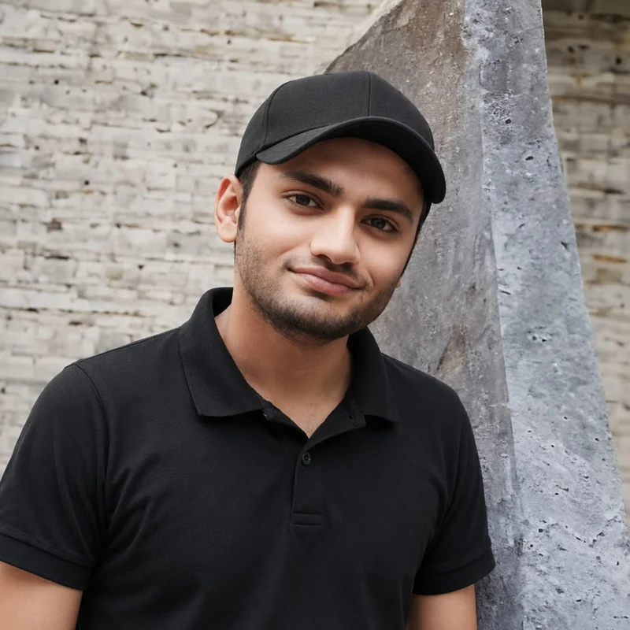

IN PROGRESS
PhD in English Linguistics
Emerson University
Research focus: corpus-based multidimensional analysis of English drama subtitles.
Dailwind Studio brings together Arslan Tahir’s work in English linguistics, teaching and software development.

PhD Scholar in English Linguistics at Emerson University, and founder of Dailwind Studio™.
Arslan’s work connects corpus linguistics, computational text analysis and English language teaching. Through the LinguaX Software Series, he develops applications for corpus construction, linguistic research and language learning.
His doctoral research examines English drama subtitles through corpus-based multidimensional analysis. His wider interests include register variation, artificial intelligence in second-language acquisition and corpus-based health communication.
Emerson University
Research focus: corpus-based multidimensional analysis of English drama subtitles.
Riphah International University, Islamabad
Thesis: The Role of Artificial Intelligence in Promoting ESL Learners’ Autonomy: A Predictive Study of Virtual Assistant Usability.
National University of Modern Languages, Islamabad
Undergraduate research in morphosyntax and stylistics.
Research spanning corpus methods, screen language, language learning and health communication.
Tahir, A., & Mehmood, Y.
In M. Afzaal & A. Tahir (Eds.), Language, corpora, and health communication: Bridging corpus linguistics, medicine, and digital humanities, Chapter 4. Palgrave Macmillan / Springer Nature. ISBN 978-3-032-26599-9.
Tahir, A., & Tahir, A.
Journal of Applied Linguistics and TESOL, 8(4), 927.
Tahir, A. · Review of the book by R. T. Ames.
Corpus-based Studies across Humanities, 2(1), 215–220.
Tahir, A.
Linguistic Forum, 5(2), 50–56.
Teaching English, supporting student research and connecting linguistic methods with practical technology.
Emerson University · Department of English
Introduction to Morphology, Psycholinguistics, Corpus Linguistics, Functional English and Research in Action. Mentoring undergraduate corpus-based and computational research.
Air University · Department of English
Functional English and foundational linguistics for undergraduate students.
University of Central Punjab
English language and academic writing.
The Fatima School of Education and Science Academy
Secondary English language curriculum design and teaching.
National Institute of Higher Education
Computer lab coordination and computing fundamentals.
The LinguaX Software Series brings corpus construction and computational text analysis into practical research workflows.
An independent software studio developing research tools and mobile applications, including the LinguaX Software Series.
A professional role alongside teaching, research and software development.
The flagship Android corpus analysis application in the LinguaX Software Series.
Explore LinguaX ArcA comment scraping project for YouTube, Instagram and Facebook, with metadata extraction.
A metadiscourse analyzer based on Hyland’s interactional model for academic and journalistic texts.
A Flair-based sentiment analyzer for English corpora, with character-level analysis support.
A tool implementing Biber’s six-dimension framework, with support for custom dimensions.
A multi-source news scraper with relevance filtering for thematic corpus building.
Additional utilities include Stanford POS Tagger GUI, Universal Corpus Combiner, Article Keyword Filter and PDF English Extractor. Public download availability varies by project.
AntConc, #LancsBox, MAT, Stanford POS Tagger, CLAWS and Tesseract OCR. Quantitative text analysis, descriptive and inferential statistics, Kruskal–Wallis testing and Dunn’s post-hoc comparisons.
Urdu · Native
English · Full professional proficiency, academic and written